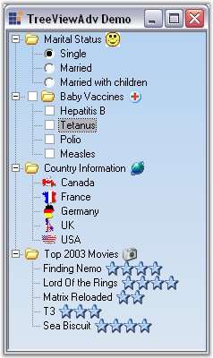

The Essential Tools' TreeViewAdv control implements a classical tree structure with support for left, right and state images, check box and option buttons, tooltips and help text capabilities. It has special features to give the TreeViewAdv control a neat look, like Gutter space, Indent Space, changing color of the lines connecting the nodes, color options for the check boxes. It provides advanced drag-and-drop UI support, context-menu association, gradient backgrounds and multiple border styles, unlimited number of controls for each nodes. The control comes with complete design-time support.
· The TreeViewAdv control contains a hierarchical collection of TreeNodeAdv objects which gets rendered in a classical tree structure.
· The top level nodes and the children nodes of the TreeNodeAdv can be accessed through the node's properties.
· While the TreeViewAdv exposes some global styles that are to be applied for all the nodes, the TreeNodeAdv lets the users to specify styles for a specific node. The Styles Architecture which will be discussed later in this section, lets the users to define styles for nodes at different levels of the tree. This allows the users to specify styles for a class of nodes.

Figure 1115: TreeViewAdv Control
 Features Overview
Features Overview